第10章 Alpha（与低风险异象）
核心命题：Alpha首先是关于基准的陈述，而非技能的度量。同一策略换不同因子基准就得到不同的Alpha。低风险异象是相对于几乎所有标准基准都稳健存在的Alpha来源，堪称"所有无效率之母"。
一、开篇案例：GM Asset Management与Martingale
Ang用一个真实的资产配置决策场景开篇。GM养老金的Jim Scott和Brian Herscovici在听Martingale Asset Management的CIO Bill Jacques推销一个"低波动率策略"。这个策略的核心主张是——低风险的股票反而有更高的收益。这直接违反CAPM的基本预测（风险越高、预期收益越高）。
Figure 10.1展示了Martingale的Low Volatility LargeCap+策略（基于Russell 1000宇宙）从1979年1月到2012年4月的累计收益。2008年之前是回测（simulated），之后是实盘（live），垂直线标记了切换点。
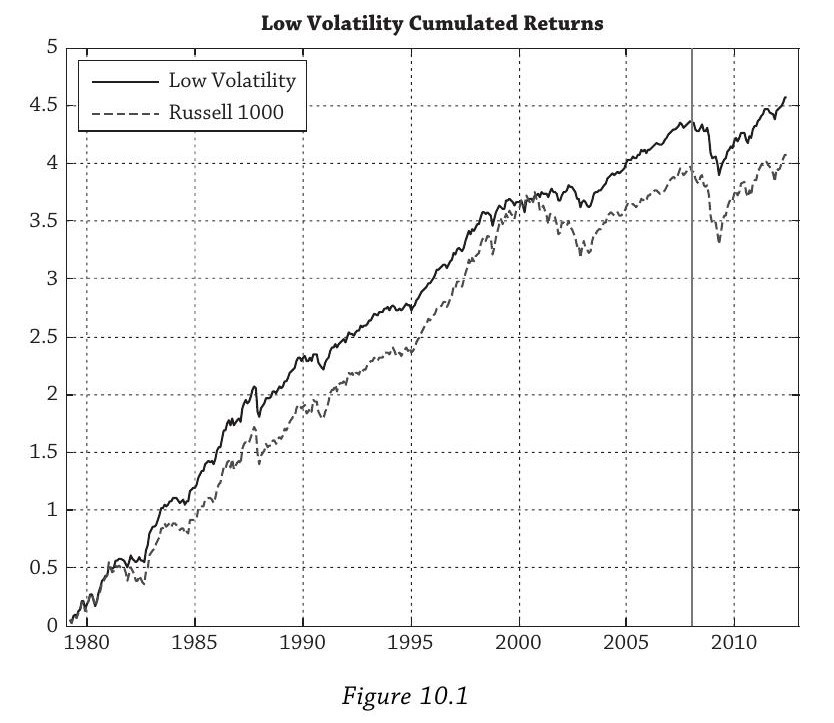
关键数据汇总：
| 指标 | 低波动策略 | Russell 1000 |
|---|---|---|
| 年均超额收益（vs R1000） | +1.50% | -- |
| 实盘期超额收益（2008年后） | +1.83% | -- |
| 均值超额收益（vs T-bill） | 8.59% | -- |
| 标准差 | 12.22% | -- |
| Sharpe比率 | 0.70 | 0.45 |
| CAPM Alpha | 3.44%/年 | -- |
| CAPM Beta | 0.73 | 1.0 |
| 跟踪误差（vs R1000） | 6.16% | -- |
但GM的人没有被立刻说服。他们的顾虑是：跟踪误差6.16%太高了（GM通常考虑的策略低于6%），而且——如果这个异象这么好，为什么没有大量资金涌入？它能持续吗？
这个案例提出了全章要回答的问题：Alpha到底在衡量什么？它有多依赖于基准的选择？低风险异象是真正的Alpha来源还是幻觉？
二、Alpha的定义
2.1 基本概念
Alpha是超额收益的样本均值。但Alpha的定义必须先于Alpha本身——你必须先选定一个基准，然后才能谈Alpha。没有脱离基准而独立存在的Alpha。
给定资产（或策略）收益 $r_t$ 和基准收益 $r^{bmk}_t$，超额收益（active return）为：
$r^{ex}_t = r_t - r^{bmk}_t \tag{10.1}$
Alpha是超额收益的样本均值：
$\alpha = \frac{1}{T}\sum_{t=1}^{T} r^{ex}_t \tag{10.2}$
**跟踪误差（Tracking Error）**是超额收益的标准差，衡量管理人偏离基准的离散程度：
$\bar{\sigma} = \text{stdev}(r^{ex}_t) \tag{10.3}$
跟踪误差约束是机构投资中非常普遍的风控手段：你不能偏离基准太远。如果基准本身做了风险调整，学术上把跟踪误差叫做"特质波动率"（idiosyncratic volatility）。
**信息比率（Information Ratio）**是Alpha除以跟踪误差，衡量每承担一单位跟踪误差风险获得多少超额收益：
$IR = \frac{\alpha}{\bar{\sigma}} \tag{10.4}$
IR超过1.0的很少见（虽然很多对冲基金募资时声称自己有）。金融危机之后，很多基金和策略的IR都大幅下降了。
特殊情形：当基准取无风险利率 $r^f_t$ 时，Alpha就是超额收益的均值 $\alpha = \overline{r_t - r^f_t}$，跟踪误差就是资产波动率 $\sigma$，信息比率退化为Sharpe比率：
$SR = \frac{\overline{r_t - r^f_t}}{\sigma}$
Sharpe比率是IR的特例——它隐含的基准是无风险利率。
2.2 基准为什么重要
这一节的核心论证：你用什么尺子量，就得到什么结论。
朴素基准：直接拿Russell 1000当基准，隐含假设策略的 $\beta = 1$：
$r_t = 0.0150 + r^{R1000}_t + \varepsilon_t$
Alpha = 1.50%/年，IR = 1.50% / 6.16% = 0.24。看起来还行，但不算惊艳。
CAPM风险调整基准：对策略做CAPM回归：
$r_t - r^f_t = 0.0344 + 0.7272(r^{R1000}_t - r^f_t) + \varepsilon_t$
发现 $\beta = 0.73 \neq 1$。正确的基准应该是什么？把CAPM回归展开：
$r_t - r^f_t = \alpha + \beta,r^{R1000}_t - \beta,r^f_t + \varepsilon_t$
$r_t = \alpha + (1 - \beta),r^f_t + \beta,r^{R1000}_t + \varepsilon_t$
拿掉 $\alpha$（管理人的超额贡献，不属于被动可复制部分）和 $\varepsilon_t$（OLS残差，均值为零，每期随机偏离），剩下的就是复制组合：
$r^{bmk}_t = (1-\beta),r^f_t + \beta,r^{R1000}_t = 0.27,r^f_t + 0.73,r^{R1000}_t$
权重之和 $0.27 + 0.73 = 1$，这就是1美元资本的分配方式：27美分放无风险资产，73美分放Russell 1000。相对于这个风险调整基准，Alpha = 3.44%/年，IR = 0.78。
差异的来源：朴素基准假设 $\beta = 1$，但策略实际 $\beta = 0.73$。用 $\beta = 1$ 的基准去衡量一个 $\beta = 0.73$ 的策略，把"少承担的风险"也算进了策略的表现里，从而低估了真正的风险调整Alpha。一旦意识到策略只用了73%的市场风险敞口就产生了那些收益，风险调整表现就好得多了。
2.3 理想基准的四个特征
(1) Well-defined（明确定义）：由独立指数提供商编制，内容无歧义、可验证。Russell 1000由Russell/FTSE编制，成分股和规则公开。
(2) Tradeable（可交易）：Alpha必须相对于可交易的基准来衡量，否则计算出的Alpha不代表可实现的投资回报。Russell 1000有低成本ETF和指数基金版本，费用不到10bp/年。
(3) Replicable（可复制）：资产拥有者和基金管理人双方都能复制。有些基准超出了资产拥有者的能力（比如复杂因子组合），这时基准就不是真正的"公平选项"。更极端的是绝对收益基准，连基金管理人自己都未必能产生基准收益。
(4) Risk-adjusted（风险调整）：大多数业界基准没有做风险调整。直接用Russell 1000当基准就是假设 $\beta = 1$，但实际 $\beta = 0.73$，这个差异把Alpha从3.44%压缩到了1.50%。而且，也许CAPM本身就不是正确的风险调整方式——市场因子之外还有价值、动量、波动率等因子。
三、创造Alpha：Grinold基本法则
管理人通过偏离基准来下注（bet），下注越成功，Alpha越高。Grinold (1989) 把这个直觉形式化为主动管理的"基本法则"：
$IR \approx IC \times \sqrt{BR} \tag{10.5}$
其中 $IR$ 是管理人能达到的最大信息比率（上界，忽略交易成本和持仓限制）；$IC$ 是信息系数，管理人预测与实际收益的相关系数；$BR$ 是策略广度，即独立下注的数量。
高信息比率有两条路径：要么预测很准（高IC），要么下注很多（高BR），或者两者兼备。
数值例子：假设目标 $IR = 0.5$。
市场择时者每季度在股票和债券之间切换，$BR = 4$，需要 $IC = 0.5 / \sqrt{4} = 0.25$。每次预测的相关系数要达到25%，要求很高。
截面选股者做价值/动量策略，同时交易400只股票，$BR = 400$，只需要 $IC = 0.5 / \sqrt{400} = 0.025$。每次预测的相关系数只需2.5%——微不足道，但乘以大量独立下注就能积累出可观的IR。这就是量化策略的核心逻辑：不追求单次预测的精度，靠大量微弱但独立的信号积累优势。
两个关键局限：
第一，IC不是常数，随规模递减。你找到的第一个管理人可能真的很优秀，第100个就未必了。经验证据（互惠基金、对冲基金、私募股权）一致显示规模越大、业绩越差。
第二，独立性假设在实践中很难成立。一个管理人超配1000只价值股、低配1000只成长股——表面上1000个下注，实际上只是对价值因子的单一赌注。雇100个固收管理人如果都在"追逐收益率"，那就是对流动性因子的单一暴露。相关的因子暴露在组合层面往往是主导性的，这也是自上而下的因子投资如此重要的原因。
基本法则在学术文献中出现很少，因为它本质上是一个统计模型，没有经济学内容——不告诉你正的风险调整机会在哪里，只提供系统评估的方法。它也建立在均值-方差效用之上，继承了其全部缺陷：忽略下行风险、偏度和尾部风险。
四、因子基准
4.1 从CAPM到复制组合
CAPM应用于资产 $i$：
$E(r_i) - r_f = \beta_i(E(r_m) - r_f) \tag{10.6}$
假设 $\beta_i = 1.3$，展开：
$E(r_i) = -0.3,r_f + 1.3,E(r_m) \tag{10.7}$
左边是1份资产 $i$ 的预期收益，右边是做空0.3份无风险资产 + 做多1.3份市场组合，权重之和 $-0.3 + 1.3 = 1$。CAPM的复制组合解读：Beta就是复制组合的权重。$\beta > 1$ 需要借钱杠杆化市场敞口；$\beta < 1$ 把一部分钱放在无风险资产里降低敞口。
Alpha就是实际收益超出复制组合的部分：
$E(r_i) = \alpha_i + \underbrace{[-0.3,r_f + 1.3,E(r_m)]}_{E(r^{bmk})} \tag{10.8}$
4.2 Buffett案例：CAPM回归
取Berkshire Hathaway 1990年至2012年5月的月度收益，做CAPM回归：
$r_{it} - r^f_t = \alpha + \beta(r_{mt} - r^f_t) + \varepsilon_{it} \tag{10.9}$
| 系数 | t统计量 | |
|---|---|---|
| Alpha | 0.72%/月 | 2.02 |
| Beta | 0.51 | 6.51 |
| Adj $R^2$ | 0.14 |
Alpha = 0.72%/月，年化8.6%，$t = 2.02 > 2$，在95%置信水平下显著。这个Alpha叫做Jensen's alpha，源自Michael Jensen 1968年的开创性研究。Beta = 0.51意味着Buffett的市场风险只有市场的一半。隐含复制组合为0.49份T-bills + 0.51份市场组合。Adj $R^2 = 14%$ 对单只股票来说已经较高（大多数低于10%）。
Figure 10.2展示了Berkshire Hathaway在三种基准下的累计超额收益。注意实线（CAPM基准）的斜率在2000年代中期之后明显变平——Berkshire的市值从1990年代初不到100亿美元增长到2012年的2200亿以上。Buffett自己2011年承认："丰收的年份再也不会回来了。我们目前管理的巨额资本消灭了取得出色业绩的一切可能。"规模消灭超额收益，与Grinold基本法则中IC随规模递减的预测一致。
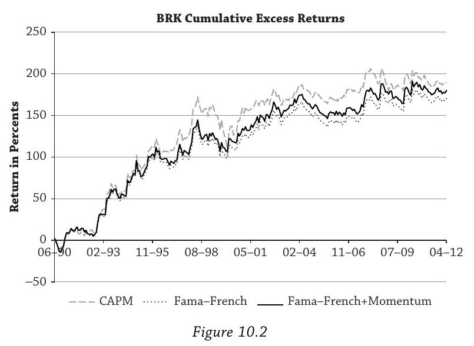
4.3 Buffett案例：Fama-French三因子回归
Fama和French (1993) 在CAPM基础上增加两个多空因子：
SMB（Small Minus Big）：做多小盘股、做空大盘股，捕捉规模效应。
HML（High Minus Low）：做多高账面市值比（价值股）、做空低账面市值比（成长股），捕捉价值效应。
回归方程扩展为：
$r_{it} - r^f_t = \alpha + \beta(r_{mt} - r^f_t) + s,SMB_t + h,HML_t + \varepsilon_{it} \tag{10.10}$
Berkshire Hathaway的估计结果：
| 系数 | t统计量 | |
|---|---|---|
| Alpha | 0.65%/月 | 1.96 |
| MKT | 0.67 | 8.94 |
| SMB | $-0.50$ | $-4.92$ |
| HML | 0.38 | 3.52 |
| Adj $R^2$ | 0.27 |
Alpha从0.72%降到0.65%（年化从8.6%降到7.8%），控制规模和价值后被削减近1%/年。但仍然很大。
市场Beta从0.51升到0.67——加入SMB和HML确实在做事。Beta上升是因为之前由市场因子"错误地"吸收的变异现在被新因子分担了。
$s = -0.50$ 显著为负：Berkshire是大盘股暴露（与SMB方向相反）。$h = 0.38$ 显著为正：Berkshire有强烈的价值取向。统计技术验证了常识——Buffett就是大盘价值投资的标杆——但给出了精确的量化度量。
隐含复制组合：0.33份T-bills + 0.67份市场组合 - 0.50份SMB + 0.38份HML。Adj $R^2$ 从14%跳到27%，拟合大幅改善。
4.4 Buffett案例：加入动量因子
Buffett公开表示不做动量投资，关注的是公司基本面而非价格趋势。加入UMD（Up Minus Down）因子：
$r_{it} - r^f_t = \alpha + \beta(r_{mt} - r^f_t) + s,SMB_t + h,HML_t + u,UMD_t + \varepsilon_{it} \tag{10.11}$
| 系数 | t统计量 | |
|---|---|---|
| Alpha | 0.68%/月 | 2.05 |
| MKT | 0.66 | 8.26 |
| SMB | $-0.50$ | $-4.86$ |
| HML | 0.36 | 3.33 |
| UMD | $-0.04$ | $-0.66$ |
| Adj $R^2$ | 0.27 |
$u = -0.04$，统计不显著（$t = -0.66$），与Buffett自述完全一致。Adj $R^2$ 仍然是27%，加入UMD没有改善拟合。Alpha反而微升到0.68%——因为Buffett轻微反动量操作（$u < 0$），控制动量后Alpha更高了一点。
隐含复制组合：0.34份T-bills + 0.66份市场组合 - 0.50份SMB + 0.36份HML - 0.04份UMD。
核心教训：每增加一个因子，就多了一层"你本可以被动获得"的收益被扣除。Alpha是逐层剥离后的残余。但即使经过四重控制，Buffett的月度Alpha仍然显著为正——这才是真正的技能信号。
五、不含无风险资产的因子基准
因子基准不一定要包含无风险资产。只要因子载荷之和等于1，任何一组可交易资产都可以构成复制组合基准。
5.1 CalPERS案例
CalPERS是美国最大的公共养老金（2011年管理2460亿美元）。基准回归：
$r_{it} = \alpha + \beta_s,r_{st} + \beta_b,r_{bt} + \varepsilon_{it} \tag{10.12}$
施加约束 $\beta_s + \beta_b = 1$，保证右边也是1份资本的配置。用CalPERS 1990至2011年的年度收益估计：
| 系数 | t统计量 | |
|---|---|---|
| Alpha | $-1.11%$/年 | $-1.16$ |
| 债券载荷 | 0.32 | 13.97 |
| 股票载荷 | 0.68 | 13.97 |
| Adj $R^2$ | 0.90 |
Adj $R^2 = 90%$：CalPERS的收益几乎完全被32%债券+68%股票的被动组合解释。Alpha = $-1.11%$/年（点估计为负），但 $|t| = 1.16 < 2$，不显著。
费用问题让情况更糟：CalPERS 2011年费用率超过0.50%（年报推算超0.80%），是同行中位数0.29%的3到4倍，是最大30%养老金0.15%的5到6倍。管理股债指数组合在CalPERS的规模下费用远低于0.10%。
Figure 10.3展示了CalPERS的累计超额收益。2000-2007年有所改善，但2008年金融危机中彻底崩塌——CalPERS在2008-2009年没有再平衡，反而在价格低时卖出了股票。
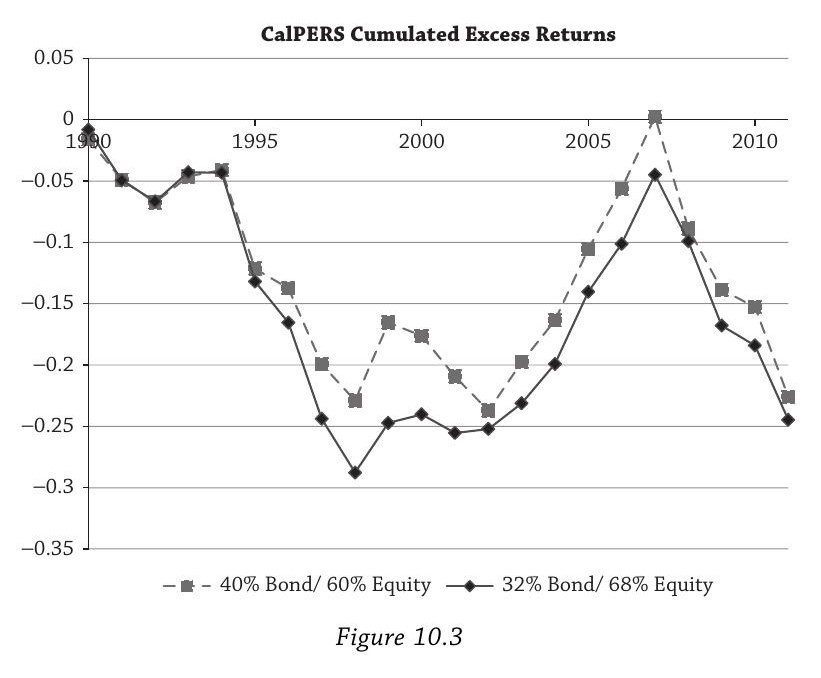
5.2 房地产案例
加拿大养老金计划（CPP）认为房地产与股票和债券有很多共同特征，不把房地产当独立资产类别。Ang用NCREIF 1978年6月至2011年12月的季度收益做了三个因子回归（均施加载荷之和等于1的约束）：
| REIT+债券 | 股票+债券 | REIT+股票+债券 | ||||
|---|---|---|---|---|---|---|
| 系数 | t统计量 | 系数 | t统计量 | 系数 | t统计量 | |
| Alpha | $-0.51%$ | $-1.02$ | $-0.43%$ | $-0.90$ | $-1.50%$ | $-1.05$ |
| REIT | 0.30 | 5.92 | -- | -- | 0.12 | 1.81 |
| 债券 | 0.70 | 14.0 | 0.65 | 12.7 | 0.26 | 3.75 |
| 股票 | -- | -- | 0.35 | 6.95 | 0.61 | 11.6 |
三个基准下Alpha点估计都为负且不显著。仅用股票和债券就能很好模拟房地产收益（35%股票+65%债券），支持CPP的立场：房地产不是独立资产类别。
Figure 10.4展示了三个基准下直接房地产的累计超额收益。1980年代初有一些超额收益，之后因子基准持续跑赢，直到2000年代中期房地产泡沫期间才追回一些。2008-2009年的崩盘清晰可见。
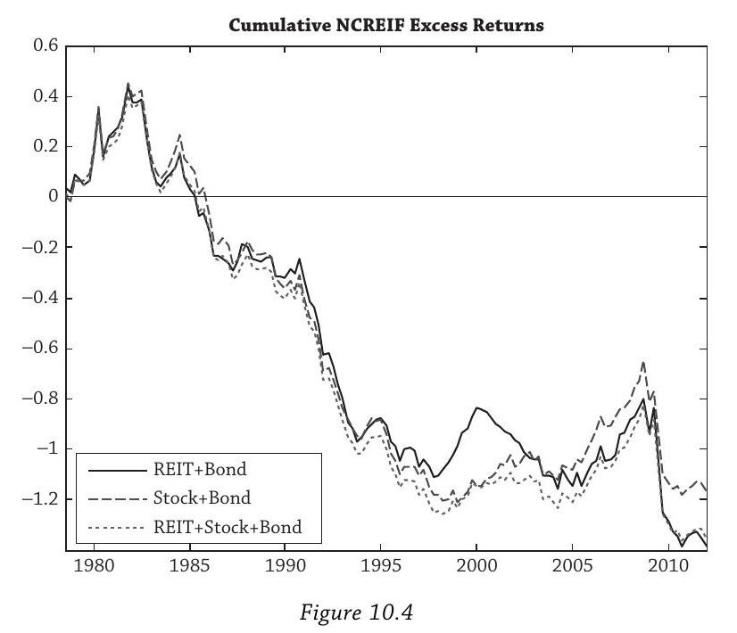
六、时变因子暴露与风格分析
6.1 动机与方法
到目前为止所有因子回归都假设载荷是常数。但基金经理的投资风格会随时间变化。William Sharpe (1992) 提出"风格分析"框架：用实际可交易的低成本ETF替代学术因子，允许权重随时间滚动更新。
Ang选了四只基金（2001年1月至2011年12月月度数据）：
- LSVEX（LSV Value Equity）：量化价值策略
- FMAGX（Fidelity Magellan）：著名零售共同基金
- GSCGX（Goldman Sachs Capital Growth）：成长策略
- BRK（Berkshire Hathaway）：Buffett
先做常数FF+动量四因子回归作为对照：
| LSVEX | FMAGX | GSCGX | BRK | |
|---|---|---|---|---|
| Alpha | 0.00% | $-0.27%$ | $-0.14%$ | 0.22% |
| $t(\alpha)$ | 0.01 | $-2.23$ | $-1.33$ | 0.57 |
| MKT | 0.94 | 1.12 | 1.04 | 0.36 |
| SMB | 0.01 | $-0.07$ | $-0.12$ | $-0.15$ |
| HML | 0.51 | $-0.05$ | $-0.17$ | 0.34 |
| UMD | 0.02 | 0.02 | 0.00 | $-0.06$ |
LSVEX的Alpha精确为零，HML载荷高达0.51——纯粹的价值因子暴露，没有超出因子的Alpha。FMAGX的Alpha = $-0.27%$/月（年化 $-3.24%$），$t = -2.23$，统计显著为负。BRK的Alpha为正但不显著（$t = 0.57$）——仅仅因为样本起点从1990推后到2001，Buffett的Alpha就从显著变成不显著。检测Alpha的统计困难远比大多数人想象的大。
6.2 不做空的风格分析
用三只SPDR ETF做可交易基准：SPY（S&P 500）、SPYV（S&P 500价值）、SPYG（S&P 500成长）。
$r_{t+1} = \alpha_t + \beta_{SPY,t},SPY_{t+1} + \beta_{SPYV,t},SPYV_{t+1} + \beta_{SPYG,t},SPYG_{t+1} + \varepsilon_{t+1} \tag{10.14}$
约束 $\beta_{SPY,t} + \beta_{SPYV,t} + \beta_{SPYG,t} = 1$，权重非负（不做空），用过去60个月数据滚动估计。
Figure 10.5展示了结果。Panel A是时变风格权重：LSVEX始终是市场+价值的稳定组合；FMAGX逐渐从混合变成纯成长；GSCGX从市场+成长演变为纯成长；BRK最有意思——2006年强烈价值取向，金融危机期间切换到成长风格，危机消退后又回到价值。Panel B是累计超额收益：LSVEX为零（被ETF完全复制），FMAGX向下（持续毁灭价值），GSCGX为零，BRK是唯一有向上趋势的。
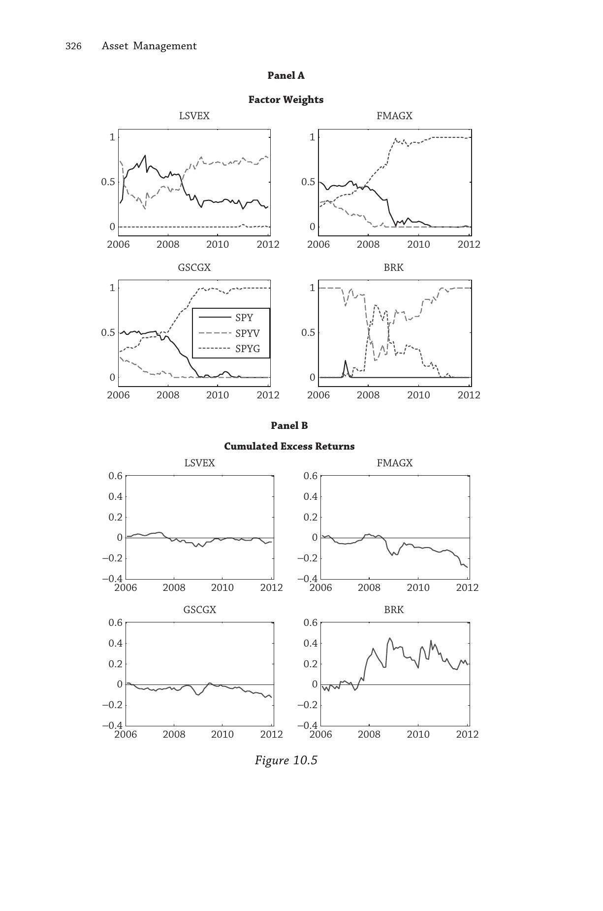
6.3 允许做空的风格分析
允许做空后，可以构造类似Fama-French的多空因子：
$r_{t+1} - r_{f,t+1} = \alpha_{i,t} + \beta_{SPY,t}(SPY_{t+1} - r_{f,t+1}) + h_t(SPYV_{t+1} - SPYG_{t+1}) + \varepsilon_{t+1} \tag{10.15}$
$SPYV - SPYG$ 是可交易版本的HML因子。
Figure 10.6展示了允许做空后的结果。Panel A显示LSVEX正的 $h$ 载荷确认价值偏向，FMAGX和GSCGX的 $h$ 逐渐变负（成长化），BRK在2008-2009年出现负 $h$（从价值切到成长）。Panel B的累计超额收益与不做空版本大体相似，但允许做空普遍压低了Alpha——因为做空给了基准更多自由度去复制基金收益。
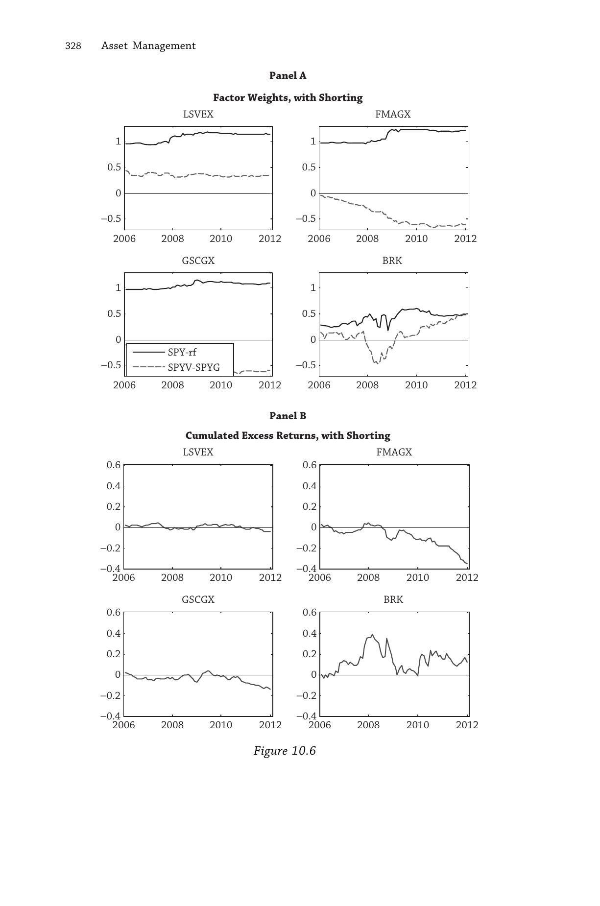
时变基准下的统计推断问题很严重：常数基准下检测Alpha就已经很难，时变风格的标准误更大。你同时在估计变化的基准和变化的Alpha，置信区间变得非常宽。
七、非线性收益与Alpha的幻觉
7.1 线性框架的盲区
所有Alpha度量都建立在线性框架上。但很多策略（尤其涉及期权的动态策略）收益结构是非线性的。在线性框架下，非线性策略可以伪装出根本不存在的Alpha。
Figure 10.7展示了一个极端例子：在Black-Scholes世界里卖出市场看跌期权，记录收益后做CAPM回归，截距（"Alpha"）显示为正。但我们知道Black-Scholes世界无套利，卖期权不创造任何额外价值。Alpha是纯粹的幻觉。
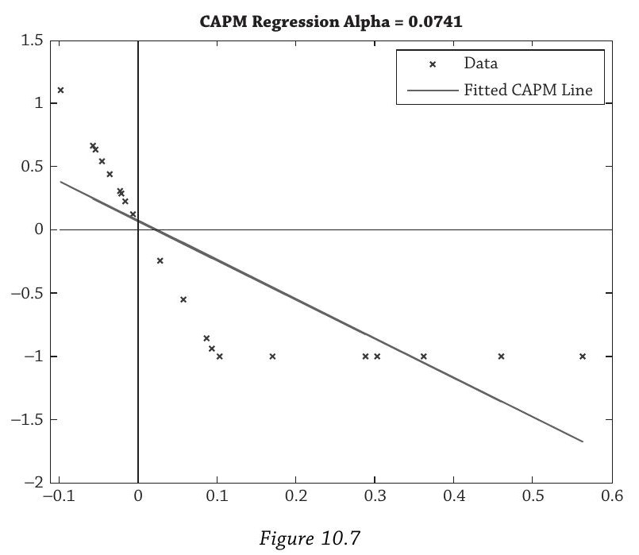
原因在于卖看跌期权的收益分布：大部分时间赚取小额权利金（很多小的正收益），偶尔市场大跌承受巨额损失（少数极端负收益）。小的正收益把分布中间撑厚，线性回归看到均值被拉高就报告正截距。但极端负收益体现在左尾——偏度变得很负。Alpha和信息比率只捕捉均值和方差，完全忽略偏度和更高阶矩。
这在实践中很重要：并购套利、配对交易、可转债套利等常见对冲基金策略本质上都是卖波动率，收益结构类似卖期权，会在线性框架下膨胀Alpha。
7.2 两种应对方法
方法一：加入可交易的非线性因子。 把波动率风险因子放进基准，"伪Alpha"会被因子载荷吸收。局限是有些非线性因子只能通过特定管理人才能接触到。
方法二：检验不可交易的非线性项。 在回归右边加入 $r^2_t$ 或 $\max(r_t, 0)$，但加入后就不再是Alpha——不可交易项不构成合法基准。
7.3 Goetzmann等人的抗操纵度量
Goetzmann et al. (2007) 提出了不能被动态操纵的业绩度量：
$\frac{1}{1-\gamma}\ln\left[\frac{1}{T}\sum_{t=1}^{T}(1 + r_t - r^f_t)^{1-\gamma}\right] \tag{10.16}$
其中 $\gamma = 3$。本质是CRRA效用函数的确定性等价，对财富的所有阶矩敏感。$\gamma = 3$ 对左尾损失的厌恶足够高，卖期权膨胀均值的伎俩无法提升评分。在足够长样本中不可操纵。
Morningstar使用的变体是 $\gamma = 2$ 的CRRA效用函数。
八、Alpha到底存在吗？
Alpha基于基准，基准基于因子模型。测试Alpha是否为零，等价于测试市场效率——学术上叫联合假设问题（Joint Hypothesis Problem）：你同时在检验"管理人有没有技能"和"你的风险模型对不对"。
Hansen和Jagannathan (1997) 证明了一个强结果：事后总能找到一个基准组合使得Alpha为零。 对任何基金，只要足够灵活地选择因子，就可以构造出让Alpha消失的基准。
但Grossman和Stiglitz (1980) 也证明了完全有效的市场不可能存在（否则没人有动力收集信息）。所以Alpha是存在的，只是极难检测。
对资产拥有者的启示：一个学者说"Fidelity没有Alpha"对某些资产拥有者可能毫无意义——如果他们自己无法复制用来计算Alpha的那些复杂因子。对这个资产拥有者，Fidelity可能确实在提供Alpha。对另一个能自己做因子暴露的资产拥有者，Fidelity可能就是负Alpha。
Alpha首先是关于因子基准的陈述。选择正确的因子集，是资产拥有者最核心的任务。
九、低风险异象
9.1 三个层面
低风险异象是三个效应的组合，第三个是前两个的推论：
- 波动率与未来收益负相关
- 已实现Beta与未来收益负相关
- 最小方差组合跑赢市场
这三条都直接违反CAPM。Harvard的Robin Greenwood称之为"所有无效率之母"。
9.2 历史
负向关系最早在1960年代末被发现。Friend and Blume (1970) 在1960-1968年样本中发现"风险调整后业绩与风险的关系是反向的且高度显著"。Haugen and Heins (1975) 用1926-1971年数据发现"月收益方差更低的股票组合，长期来看反而有更高的平均收益"。
这些结果后来大部分被遗忘，直到2000年代中期重新引起关注。
9.3 波动率异象
Ang et al. (2006) 发现高波动率股票的收益"低得可怜"——接近零。这是现代"风险异象"文献的起点。
理论上，CAPM及其多因子扩展认为预期收益由因子协方差决定，特质波动率不应进入定价。但如果市场分割（有些投资者无法分散），特质波动率应与收益正相关。Ang et al. 的结果恰恰相反——是负相关。
滞后波动率与未来收益（Figure 10.8）：取美国股票（1963年9月至2011年12月），每季度按过去一季度的特质波动率分成五档，计算月频收益。
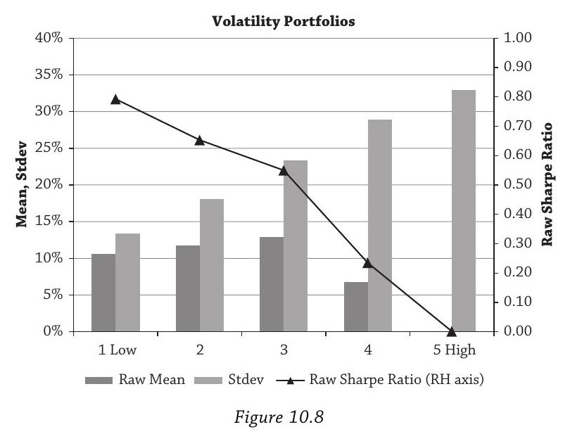
| 分档 | 1（低） | 2 | 3 | 4 | 5（高） |
|---|---|---|---|---|---|
| 平均收益 | >10% | >10% | >10% | 6.8% | 0.1% |
| Sharpe比率 | 0.8 | -- | -- | -- | 0.0 |
Sharpe比率从0.8单调递减到0.0。最高波动率股票几乎没有收益。结果对规模、价值、杠杆、流动性、动量等大量控制变量稳健。Ang et al. (2009) 在每个G7国家和所有发达市场都发现同样效应。
同期波动率与收益（Figure 10.9）：在期末按已实现波动率分档，度量同期收益（不可交易组合）。
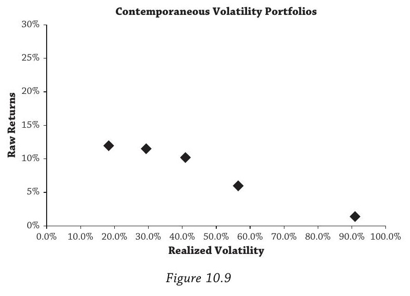
同期波动率和收益仍然是负关系：最高波动率股票在当期就在亏钱。这意味着高波动率股票当前亏钱（不可预测）且未来也倾向于继续亏钱（可预测）。后者的可预测性构成了可交易的Alpha来源。
9.4 Beta异象
滞后Beta与未来收益（Figure 10.10）：每季度按过去Beta分五档，计算月频收益。
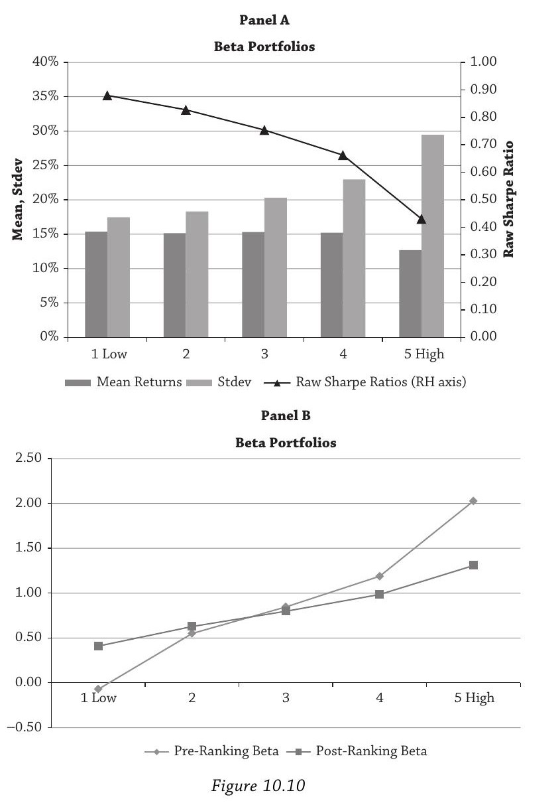
Panel A：平均收益跨Beta分档几乎平坦（前四档约15%，第五档12.7%）。Beta异象不在收益层面，而在风险调整层面：高Beta股票波动大，Sharpe比率从低Beta的0.9降到高Beta的0.4。承担更多Beta风险没有带来相应的收益补偿。
Panel B：前排序Beta（用来分档的过去Beta）展开很大，但后排序Beta（未来已实现Beta）的线平坦得多。过去Beta对未来Beta的预测力很差——Beta的估计噪音非常大。
同期Beta与收益（Figure 10.11）：在期末分档，画出同期已实现Beta和收益的关系。
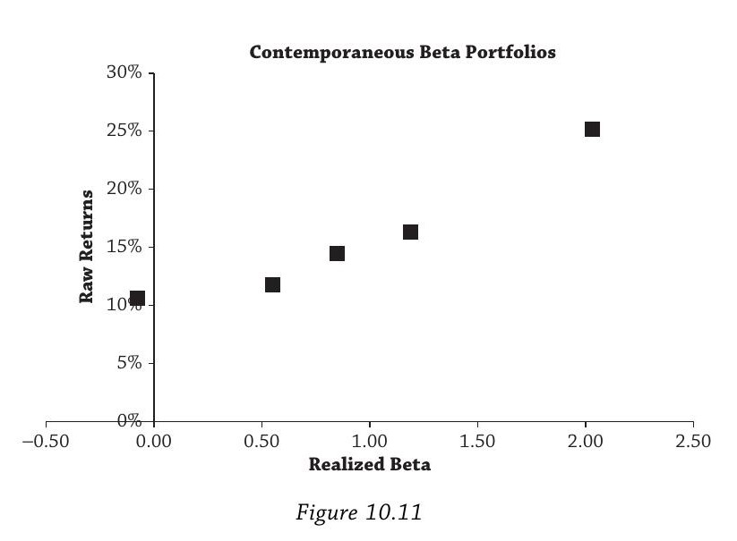
结果：同期Beta和收益的关系是正的——恰恰是CAPM预测的方向。CAPM在同期意义上没有被否定。问题不在CAPM的逻辑，而在于我们没有能力预测未来Beta。
调和逻辑：过去Beta（可观测）对未来Beta（不可观测）预测力差，而未来Beta与未来收益正相关（CAPM成立）。链条在第一个环节断裂了。用期权隐含信息（Buss and Vilkov, 2012）或会计估值信息（Cosemans et al., 2012）估计的Beta确实能得到正的风险-收益关系。
9.5 风险异象因子
BAB因子（Betting Against Beta）：Frazzini和Pedersen (2010) 构造，做多低Beta、做空高Beta，按Beta缩放到单位敞口：
$BAB_{t+1} = \frac{r_{L,t+1} - r_f}{\beta_{L,t}} - \frac{r_{H,t+1} - r_f}{\beta_{H,t}} \tag{10.17}$
Figure 10.12说明了几何直觉。"Data"线是经验上的平坦关系，"Standard CAPM"线是理论预测。对低Beta组合加杠杆到"Long"点，对高Beta组合混合无风险资产到"Short"点，两者都是单位Beta头寸。
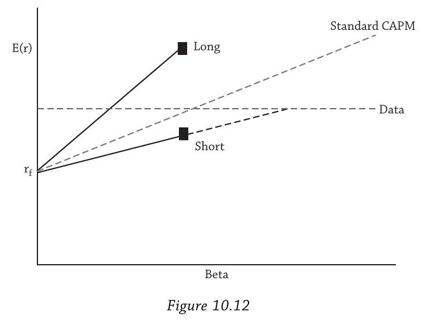
VOL因子：类似BAB但按波动率缩放：
$VOL_{t+1} = \sigma_{target} \times \left(\frac{r_{L,t+1} - r_f}{\sigma_{L,t}} - \frac{r_{H,t+1} - r_f}{\sigma_{H,t}}\right) \tag{10.18}$
目标波动率 $\sigma_{target} = 15%$。波动率因子的优势：各档之间有明显收益差异（不仅是Sharpe比率差异），可以直接交易。
比较（Figure 10.13）：VOL累计收益更高，Sharpe比率略高（0.6 vs 0.5）。最重要的发现是BAB和VOL的相关系数只有 $-9%$——Beta异象和波动率异象在统计上几乎独立。
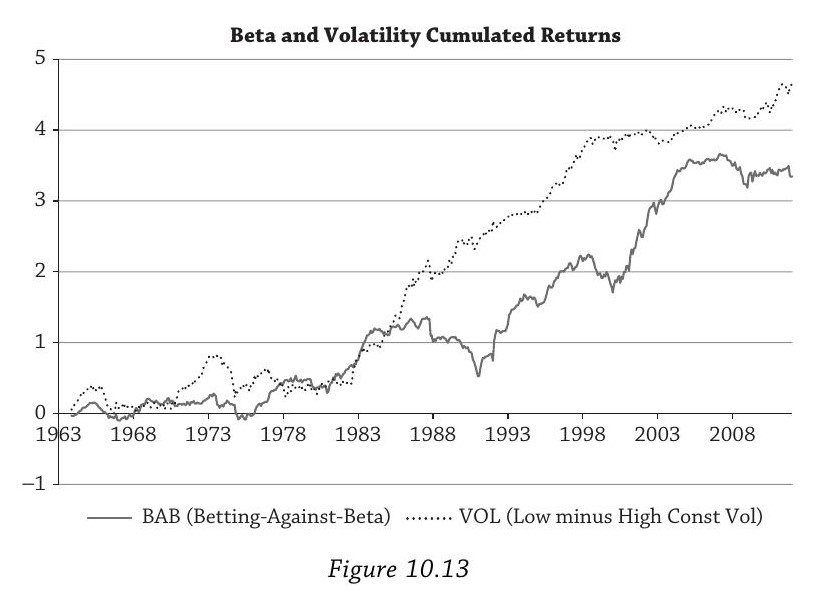
四因子回归结果：
| BAB | VOL | |||
|---|---|---|---|---|
| 系数 | t统计量 | 系数 | t统计量 | |
| Alpha | 0.33%/月 | 1.89 | 0.42%/月 | 4.37 |
| MKT | $-0.17$ | $-4.13$ | 0.87 | 38.8 |
| SMB | 0.29 | 5.20 | $-0.63$ | $-20.3$ |
| HML | 0.48 | 7.85 | 0.20 | 5.73 |
| UMD | 0.09 | 2.35 | 0.13 | 6.00 |
BAB的Alpha年化4%，边际显著（$t = 1.89$, $p \approx 0.06$）。VOL的Alpha年化5%，高度显著（$t = 4.37$）。
因子载荷揭示两个异象的不同性质：BAB的SMB载荷为正（Beta异象更多在小盘股），VOL的SMB载荷为负（波动率异象更多在大盘股，流动性更好，更容易交易）。两者都有显著的价值倾斜和动量倾斜。
结论：低Beta和低波动率不是二选一，而是应该两个都做。
十、低风险异象的解释
低风险效应在美国股市、国际股市、国债、公司债、信用衍生品、大宗商品、外汇、期权市场中都被观察到。目前没有单一完整解释。
10.1 数据挖掘
一些文献指出原始结果对加权方式和流动性有一定敏感性。但反驳数据挖掘的最强论据是普遍性：Ang et al. 在衰退和扩张期都存在（2006），在国际市场存在（2009）；Frazzini and Pedersen在股票、债券、大宗商品、外汇中都存在（2011）；Cao and Han在期权市场存在（2013）；Blitz and de Groot在大宗商品市场存在（2013）。Chen et al. (2012) 的综述结论：特质波动率效应是普遍的股票现象，不是微观结构偏差。
10.2 杠杆约束
很多投资者受杠杆约束——想要更高收益但不能借钱。他们买入自带"内建杠杆"的高Beta股票作为次优选择，大量资金涌入推高价格，导致未来收益降低。用CAPM语言说：杠杆约束投资者的需求压平了证券市场线。
局限：只能解释高Beta股票的被高估，不能解释低Beta股票的被低估。而且经验上，机构投资者倾向于低配高风险股票，高特质波动率股票主要被散户持有。
10.3 代理问题
资产管理行业的制度结构本身可能导致异象持续。Figure 10.14的逻辑：
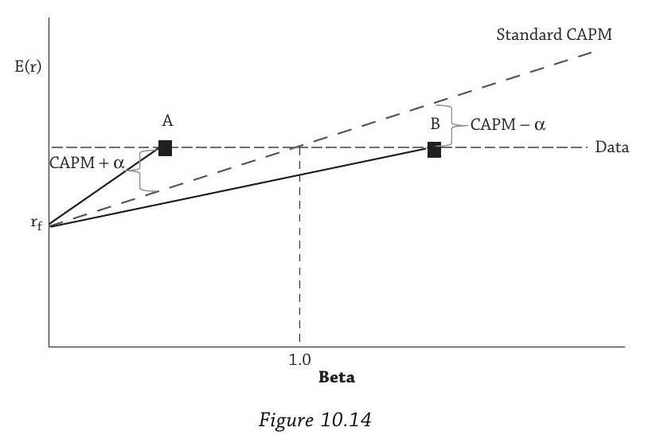
对角线"CAPM"是理论预测的证券市场线，水平线"Data"是经验观察的平坦关系。股票A（低Beta）有正Alpha，股票B（高Beta）有负Alpha。
无约束投资者的最优行为是买A卖B，套利消除异象。但受跟踪误差约束的做多投资者（大多数机构的真实处境）面临的困境是：买入A产生大量跟踪误差（Beta远低于基准的1.0），约束不允许；要从B赚钱需要做空，但long-only不能做空。
市值加权基准加上跟踪误差约束，使得机构投资者既无法做多低风险股票，也无法做空高风险股票。异象因此持续存在。这恰好就是GM Asset Management的困境——跟踪误差6.16%是binding constraint。
Frazzini, Kabiller, and Pedersen (2012) 发现加入BAB因子后Buffett的Alpha从12.5%降到11.1%，再加公司质量因子降到7.0%。Buffett的部分能力来自选择低风险股票，但大部分来自发掘高质量公司的真正技能。
10.4 偏好
如果投资者天然偏好高波动率股票——追逐"希望与梦想"——他们就会把这些股票买贵，导致低收益。反过来，安全股票被回避，价格偏低、收益偏高。
Hou和Loh (2012) 系统检验了各类解释，分为彩票偏好、市场摩擦、其他（不确定性、卖空约束、财务困境、投资者注意力不足等）。结论：单独来看每种解释能解释不到十分之一。但彩票偏好类解释组合起来能解释约一半。另一半仍然无法解释。
Hong和Sraer (2012) 的异质信念+卖空约束理论：分歧小时CAPM成立；分歧大时一些投资者想做空但不能，高Beta股票被高估，关系变成下行。
十一、全章收尾：GM的决策
Martingale的低波动率策略相对于Russell 1000有Alpha（朴素基准下1.50%/年，风险调整后3.44%/年），相对于多因子基准仍然显著。
但如果把基准本身换成低波动率策略？Alpha当然消失——Alpha变成了Beta。这不仅是哲学游戏：如果GM能在内部做低波动率策略，Martingale提供的就不再是Alpha而是可复制的因子暴露。
低风险异象会消失吗？Ang希望它尽快消失。如果消失，已建仓的聪明资金会大赚——低风险股票目前价格偏低，资本涌入推高价格消除异常收益，当前持有者享受资本利得。
但Ang怀疑这不会发生。低波动率策略远未成为主流，大多数机构投资者仍低配低风险股票。低风险异象在如此多市场中普遍存在，暗示着需要一个远比简单摩擦或行为偏差更深层的解释。正如Greenwood所说，低风险异象是所有无效率之母。
附录：全章公式索引
| 编号 | 公式 | 含义 |
|---|---|---|
| (10.1) | $r^{ex}_t = r_t - r^{bmk}_t$ | 超额收益定义 |
| (10.2) | $\alpha = \frac{1}{T}\sum r^{ex}_t$ | Alpha定义 |
| (10.3) | $\bar{\sigma} = \text{stdev}(r^{ex}_t)$ | 跟踪误差 |
| (10.4) | $IR = \alpha / \bar{\sigma}$ | 信息比率 |
| (10.5) | $IR \approx IC \times \sqrt{BR}$ | Grinold基本法则 |
| (10.6) | $E(r_i) - r_f = \beta_i(E(r_m) - r_f)$ | CAPM |
| (10.9) | $r_{it} - r^f_t = \alpha + \beta(r_{mt} - r^f_t) + \varepsilon_{it}$ | CAPM回归 |
| (10.10) | 加入 $s,SMB + h,HML$ | Fama-French三因子回归 |
| (10.11) | 加入 $u,UMD$ | 四因子回归 |
| (10.16) | $\frac{1}{1-\gamma}\ln[\frac{1}{T}\sum(1+r_t-r^f_t)^{1-\gamma}]$ | Goetzmann抗操纵度量 |
| (10.17) | BAB因子构造 | 按Beta缩放的多空因子 |
| (10.18) | VOL因子构造 | 按波动率缩放的多空因子 |